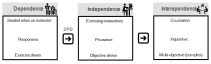

Teaching and supervision
Context
I am fortunate to teach in one of the most challenging programs at one of the top universities in the country. These students already know how to read a textbook. From this perspective, my role is not merely to summarize content, but to help them realize projects that can benefit society. The growing class sizes (120+ seniors) and pandemic push towards remote learning appear to have reduced student engagement and attendance. This creates a challenge in balancing autonomy and engagement.
On the other hand, the challenge we face is that students enter our program with varying backgrounds and levels of experience. For instance, some students might have a strong foundation in computer programming from high school, while others may have only used email before starting university. Similarly, one student may own a virtual reality headset, whereas another might not even have a laptop. These diverse range of backgrounds create a challenge for starting points to learning, especiallly in education in a technology dependant doman like engineering. This diversity necessitates a curriculum that is inclusive, engaging, and constructive, catering to a wide range of social and experiential backgrounds.
As we strive to develop well-rounded, resilient, and impactful graduates, we adhere to the graduate attributes (GA's) outlined by Stellenbosch University 1 and the Engineering Council of South Africa 2. These GA's incorporate high level characteristics previously considered as hard and soft skills. These GA's provide a valuable vision for what the next generation of graduation should look like. What is important to remeber is that assessement of GA's does not scale well with class sizes.

For students from less privileged backgrounds, the goal is to provide exposure to modern engineering tools and technologies, helping to level the playing field. For students with more resources, the emphasis is on understanding and communicating high-level concepts, regardless of the specific technology involved. This approach fosters a deeper grasp of core ideas and enhances their ability to convey complex concepts effectively.
I actively integrate discussions on societal trends, such as sustainable development goals, into the curriculum, highlighting how current technologies can address these issues locally.
Personal reflection
From a young age, I was captivated by the natural world. Watching Sunday night documentaries and observing ants in the garden, I was fascinated by the stories of great scientists and their discoveries. I still marvel at the wonders of astronomy and how we imagine the cosmos in all its splendor.
Video games also shaped my thinking, focusing on problem-solving and simulations of complex systems. I found comfort in unraveling puzzles and exploring unknown scenarios, which deepened my curiosity and passion for discovery.
Despite my early fascination, my path to academia was not straightforward. Discouraged from taking higher-level courses in high school, I didn’t initially apply to university, even though I excelled in mathematics. I spent two years at a technical university before transferring to a classical one. This detour taught me invaluable lessons: to question everything, trust my instincts, and understand that no system is perfect. These experiences have made me especially empathetic toward students who don’t fit the traditional academic mold or take unconventional paths.
Life is challenging, but pursuing science is worth the struggle. As an academic researcher, I am privileged to explore topics I am passionate about, funded by taxpayers, with the hope of making the world a better place. This career has given me the freedom to indulge in my curiosity, financial stability, and the fulfilment of a lifelong dream.
However, I never felt truly validated until I could help others experience the same joy and curiosity. I see every student as a young researcher fueled by intrigue, even though I am often reminded of their focus on academic scores. This drives my commitment to making students feel welcome, competent, and confident in their academic journeys. I want them to experience the playful curiosity and endless opportunities that scientific inquiry offers.
Academia has given me a strong sense of purpose and the chance to inspire the next generation of scientists. I am deeply grateful for the opportunities it has afforded me and am passionate about helping students navigate their own paths, no matter how unconventional they may be.
Teaching philosophy
The societal implications of projects, people, and organizations are the ultimate purpose of all academic pursuits. Contributions at both professional and academic levels improve society, and it is crucial for us to regularly revisit this “why” in the classroom. Every graduate I mentor has the potential to improve countless lives, which inspires me to push beyond my own limits. Conversely, students must understand the potential impact of their success.
Creating a nurturing environment conducive to success is essential. While good intentions, inspiration, and ambition make for compelling stories, the path to realization is paved with disciplined habits. I support individuals who bravely attempt new challenges, ask questions, and test boundaries. This means fostering an environment where discussion, failure, and diverse opinions are welcomed. After all, universities are meant to be a melting pot of the greatest minds of our generation.
“Steel molds steel, so one person molds another.”

A model of maturity for individuals within an organisation3 applied to teaching starts with instructing the students (dependence), having them perform independently (zone of proximal development), and finally having them co-create.
Developing individuals who can transform ideas into reality involves a delicate balance of nurturing and empowering, rather than merely instructing. By applying their skills, students grow both confident and competent. My goal is to create environments and opportunities for progressive learning, allowing students to exercise autonomy. “We grow through people and projects,” and these habits are best cultivated through practice, not lectures. Ultimately, my aim is to develop individuals to a point where they no longer need me and are fully equipped to make their own impact on the world. When I ask a complex, contextual exam question and receive meaningful answers, I know I have made a contribution towards a better society.
Professionals Shaping Society
Students are the catalysts of societal change. As educators, our role is to equip them with the confidence, conviction, and competence to lead this transformation.
Confidence
Confidence is nurtured by treating students as emerging professionals. Instead of making them "earn their place," I welcome them into the engineering community through role-playing exercises, where they tackle real-world challenges as consultants. This helps them envision their future roles and builds their self-assurance.
Conviction
Conviction stems from understanding the broader impact of their work. I emphasize the importance of linking their academic efforts to societal needs, fostering a sense of purpose and commitment to making a difference.
Competence
Competence cannot be achieved in the classroom alone. It requires continuous learning and self-reflection. Mastery is achieved through deliberate practice, and students must be encouraged to see learning as a lifelong journey.
Confidence and competence are built through practice and evidence of improvement. Through amounting evidence, students gain proof of their growing abilities. Conviction in the form of perseverance emerge from recognizing the value they bring to society. Understanding their role in aiding others inspires them to undertake ambitious projects for the greater good, rekindling a selfless pursuit of challenging goals.
These three pillars form an intrinsic motivation framework for developing professionals who shape society for the better.
Questions that placing students as professionals
I use questioning techniques to immerse students in their professional roles4 , deepening their understanding of ethical and societal responsibilities. When introducing a new concept, I present scenarios that require real-world decision-making. First, I role-play by posing a question as if they were professionals: "You are consulted on a project and asked to decide whether a SCADA or IoT system is appropriate." Next, we explore boundaries through extreme values, such as, "The system requires high cybersecurity and should not introduce additional risks." Finally, students reflect and communicate professionally by justifying their answers to a client. This approach builds confidence and conveniently serves as a method for creating effective exercise questions.
Resulting question:
You have been consulted on a project to determine whether a SCADA or IoT system is more suitable for a manufacturing control system dealing with highly sensitive products. Given that cybersecurity is of paramount importance, evaluate both options and recommend the most appropriate system. Justify your decision by addressing the client’s specific needs.
Play
I am inspired by the concept of play as a tool for lifelong learning. "Interest begat knowledge, not the other way around". For example, making failure enjoyable motivates learners to keep trying. Play encourages autonomy, a trait often suppressed in traditional education. Vygotsky emphasized plays role in development and self-regulation5 , while Dewey likened children’s natural experimentation to scientific inquiry 6.
Previously, integrating play into engineering education was limited by rigid curricula. However, the shift towards holistic graduate attributes now supports this approach. Techniques like open canopy learning7 help students engage with the real world, fostering professional growth and societal impact.
For example, ECSA’s GAs require graduates to navigate real-world ethical and complex environments. Methods like open canopy learning, which involves:
- Observing surroundings closely,
- Sharing personal stories and perspectives,
- Making connections with people, concepts, and experiences,
- Generating and consuming content through thoughtful peer review.
This approach helps students see themselves as professionals shaping society, building on the exercise.
"Knowledge is of no value unless put into practice." ~ Anton Chekhov
The Cognitive, affective, systematic
The Cognitive-Affective Systemic (CAS) model was proposed by Alan Tait8 at the Open university to meet the requirements of remote learning. The CAS Model, integrates cognitive and emotional aspects of learning within a systemic framework for teaching. It emphasizes understanding how students' thoughts, feelings, and environmental contexts interact dynamically to influence learning. This model advocates for personalized, learner-centered approaches, considering the emotional and motivational states of students as essential for effective teaching. It encourages educators to create environments that support cognitive engagement and emotional well-being, ultimately enhancing the learning experience.
Personal growth
My journey in academic teaching has been profoundly influenced by my commitment to personal growth and development. As a participant in the PREDAC program, I’ve engaged with a community of new academics dedicated to enhancing teaching practices. Publishing three conference papers in engineering education has further deepened my understanding of pedagogical strategies. Additionally, completing a FINLO project has allowed me to explore innovative approaches to learning. Being actively involved in the academic community at Stellenbosch University, I continuously strive to refine my teaching methods and contribute meaningfully to the academic landscape.
Conclusion
In my teaching and supervision, I strive to foster an environment where students not only acquire knowledge but also develop the confidence, conviction, and competence to apply it meaningfully. By integrating elements of play, professional role-playing, and a deep commitment to personalized learning, I aim to inspire students to see themselves as active contributors to society. My ultimate goal is to nurture lifelong learners and innovative thinkers who are well-equipped to tackle real-world challenges and make a positive impact on their communities and beyond.
Modules taught
| Year | Module | Students | Responsibility |
|---|---|---|---|
| 2024 | Manufacturing System 314 | 120 third years | 30% |
| 2024 | Industrial Ergonomics 414 | 100 fourth years | 20% |
| 2024 | Production management 212 | 120 second years | 50% |
Post-graduate Supervision
| Number | Year | Name | Title | Supervision |
|---|---|---|---|---|
| 1 | 2024/25 | Waldo Jordaan (MEng-R) | Car as the cloud: vehicle opportunities for automated vehicle programming | 50% (Thinus Booysen) |
| 2 | 2024/25 | Jacob Wafula (MEng-R) | Deep active learning for functional parameters design of experiments in SLM printed dental implants | 100% |
-
Stellenbosch University, ‘Graduate Attributes of Stellenbosch University’. Accessed: Dec. 03, 2024. [Online]. Available: https://www.sun.ac.za/english/learning-teaching/student-affairs/about/graduate-attributes ↩
-
Engineering Council of South Africa, ‘Qualification Standard for Bachelor of Engineering Technology: NQF Level 7’, E-02-PT, 2016. [Online]. Available: https://www.ecsa.co.za/education/EducationDocs/E-02-PT.pdf ↩
-
Covey, Stephen (1989). The 7 Habits of Highly Effective People. ↩
-
Role Play – Engagement in Engineering Education, 2021. URL https://publish.illinois.edu/siipcompendium/2021/08/19/role-play/ (accessed 9.27.24). ↩
-
Smolucha, L., Smolucha, F., 2021. Vygotsky’s theory in-play: early childhood education. Early Child Development and Care 191, 1041–1055. https://doi.org/10.1080/03004430.2020.1843451 ↩
-
Holdo, M., 2023. Critical Reflection: John Dewey’s Relational View of Transformative Learning. Journal of Transformative Education 21, 9–25. https://doi.org/10.1177/15413446221086727 ↩
-
Duraisingh, L., Tishman, S., 2024. The Open Canopy Handbook. Harvard Graduate School of Education,. ↩
-
Tait, A., 2000. Planning Student Support for Open and Distance Learning. Open Learning: The Journal of Open, Distance and e-Learning 15, 287–299. https://doi.org/10.1080/713688410 ↩